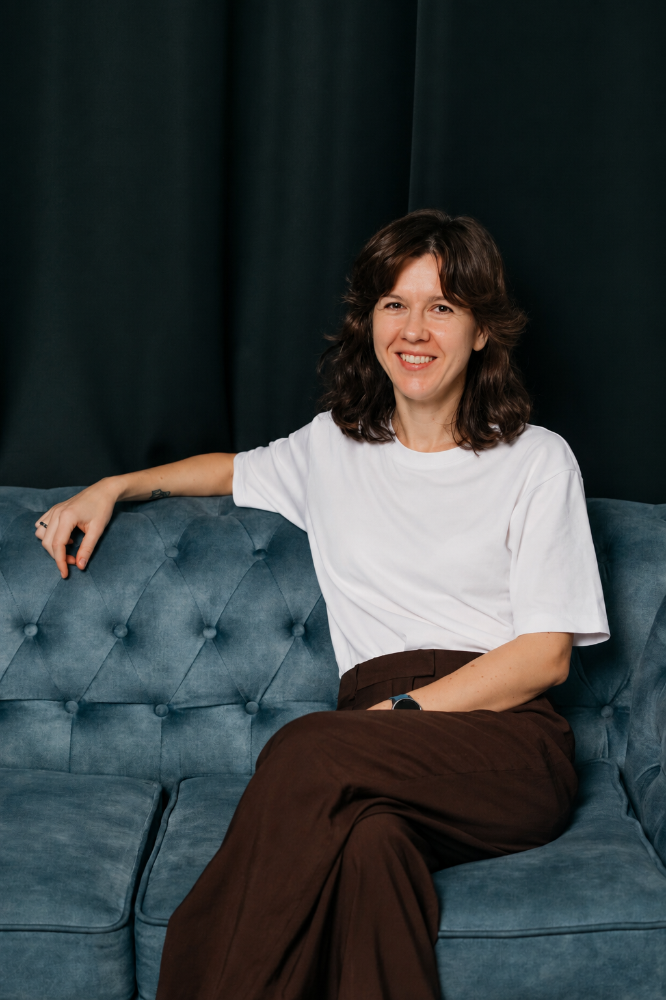
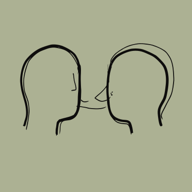

PSICHOTERAPIJA
Ne apie tai, kaip turėtų būti.
Apie tai, kaip yra.
Į terapiją dažnai ateinama tada, kai gyvenime daugėja įtampos, skausmo ar nerimo ir norisi aiškaus atsakymo, kaip iš to ištrūkti. Tačiau tikiu, kad prasmingi pokyčiai retai prasideda nuo kito žmogaus patarimo, kaip reikėtų gyventi. Jie gimsta atidžiau pažvelgus į savo patirtį, geriau supratus savo pasirinkimus ir atradus, kas iš tiesų svarbu.
Konsultuoju remdamasi egzistencinės psichoterapijos principais ir ypatingą dėmesį skiriu:
- Tarpasmeniniam ryšiui. Tikiu, kad gilus santykis su kitu padeda mažinti vienišumo ir izoliacijos jausmą. Todėl siekiu kurti pasitikėjimu grįstą erdvę, kurioje būtų saugu kalbėti ir drąsu tyrinėti savo gyvenimo patirtis.
- Buvimui čia ir dabar. Susitikimuose svarbu ne tik tai, ką pasakojame, bet ir kas vyksta tarp mūsų. Šis ryšys gali tapti veidrodžiu, kuriame pamatome, kaip kuriame santykius su kitais.
- Atvirai laikysenai. Stengiuosi išgirsti žmogaus istoriją tokią, kokia ji pasakojama, ir išlikti atvira įvairiai, kartais prieštaringai ar sunkiai suprantamai jo patirčiai.
- Dvikrypčiam dialogui. Ne tik klausausi, bet ir reaguoju, dalinuosi tuo, ką pastebiu, o pokalbio kryptį kuriame abu. Tikiu nuoširdaus dialogo ir galimybės būti pamatytam bei išgirstam poveikiu.
- Buvimui pasaulyje. Žmogaus patirties neatskiriu nuo jo santykių, kūno ir gyvenimo aplinkybių. Kartu tyrinėjame, kaip gyventi su duotybėmis, kurių nepasirinkome ir negalime pakeisti.
- Pasirinkimui ir atsakomybei. Kartu tyrinėjame, kur gyvenime atsiveria galimybė rinktis, kas daro įtaką sprendimams ir kiek jie dera su žmogaus vertybėmis.

Dėl ko galite kreiptis?
Dirbu su šiomis temomis:
- Santykiai ir artumas. Vienišumas, sunkumai kuriant ar išlaikant artimus ryšius, pasikartojančios situacijos santykiuose, artumo ir atstumo dilemos.
- Tapatybė ir santykis su savimi. Savęs pažinimas ir priėmimas, klausimai apie tai, kas esu ir kaip noriu gyventi, įtampa tarp savo norų ir kitų lūkesčių.
- Pasirinkimas, kryptis ir prasmė. Sudėtingi sprendimai, savirealizacija, vertybių ir gyvenimo krypties paieškos, prasmės klausimai ar jausmas, kad norisi gyventi kitaip, bet dar neaišku kaip.
- Pokyčiai ir neapibrėžtumas. Gyvenimo posūkiai, išsiskyrimai, netektys, nauji etapai ir laikas, kai sena nebetinka, o tai, kas bus toliau, dar neaišku.
- Nerimas ir įtampa. Nerimas, vidinė įtampa, neužtikrintumas, sunkumas išbūti nežinomybėje ar priimti sprendimus.
- LGBTQ+ patirtys. Savęs priėmimas ir atsiskleidimas, artimi santykiai, priklausymo jausmas, savo gyvenimo pasirinkimai ir susidūrimas su šeimos ar visuomenės lūkesčiais.
- Tarpkultūrinės patirtys. Gyvenimas tarp skirtingų kultūrų, prisitaikymas naujoje aplinkoje, savumo ir svetimumo patirtys bei skirtingų kultūrinių normų ir vertybių keliami klausimai.
Į konsultaciją nebūtina ateiti su aiškiai suformuluota problema. Kartais klausimai ir temos išryškėja pokalbio metu.
Šiuo metu konsultuoju tik pilnamečius ir neteikiu konsultacijų esant sunkiems psichikos sutrikimams. Savo praktiką reguliariai supervizuoju.
Kviečiu į individualius susitikimus
Gyvai Naujamiestyje, Vilniuje, arba nuotoliu.
Individualių sesijų trukmė ir kaina: 50 min. / 40 Eur.
Susisiekite el. paštu inga@kreivenaite.com arba telefonu +370 628 98903.
Pavargusiems nuo sėdimo darbo: gyvos sesijos gali vykti ir vaikštant gryname ore, ramioje, pokalbiui tinkamoje aplinkoje.
